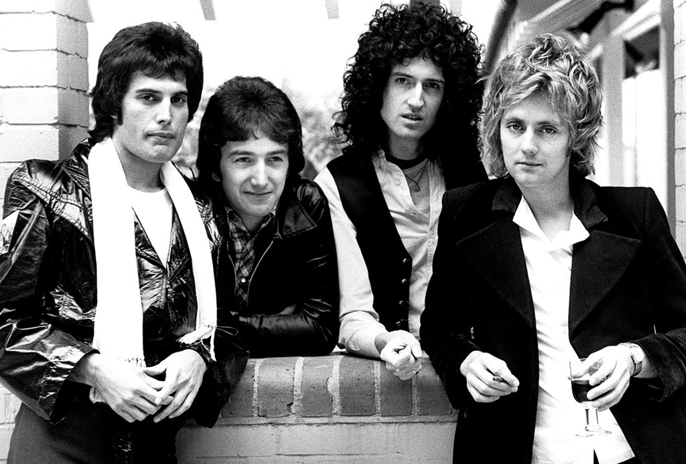

QUEEN
Banda britanica de rock formada en 1970 en londres

Integrantes del grupo
Brian may
Freddie mercury
Jhon Deacon
Roger Taylor
Discografica
Grandes Exitos de Queen
año
disco
1975
A nigth at the Opera
1986
A kind of Magic
1989
the miracle
"A kind of magic" fue el album mas exitoso
Sitio Web Oficial
www.queenonline.com